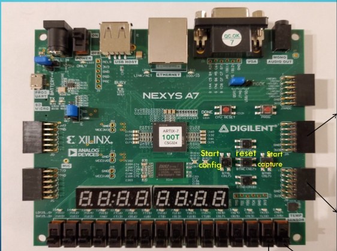
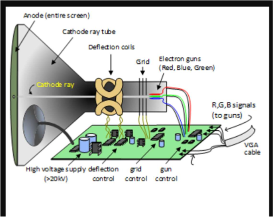
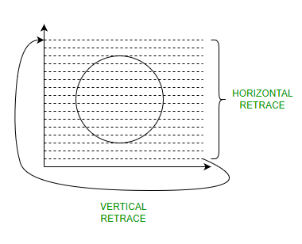
| פרמטר | מחזורי שעון | המימוש שלנו (RTL) |
|---|---|---|
| Active Display | 640 | שליפת נתונים מה-BRAM ושידור צבע (RGB) פעיל. |
| Front Porch | 16 | כיבוי מיידי של ה-RGB ל-'0000' למניעת מריחות. |
| Sync Pulse | 96 | הורדת האות הפיזי HSYNC ל-'0' למשך 96 שעונים. |
| Back Porch | 48 | המשך השהיית ה-RGB על '0000' עד הגעה לפיקסל הראשון. |
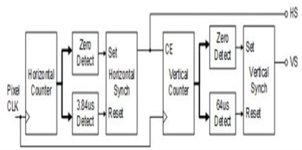
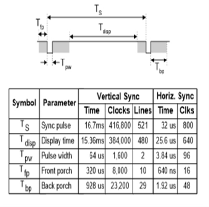
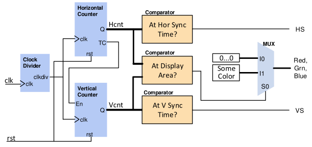
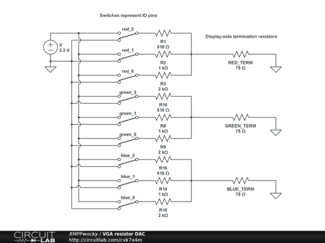
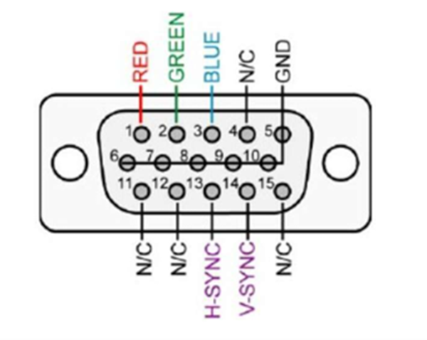
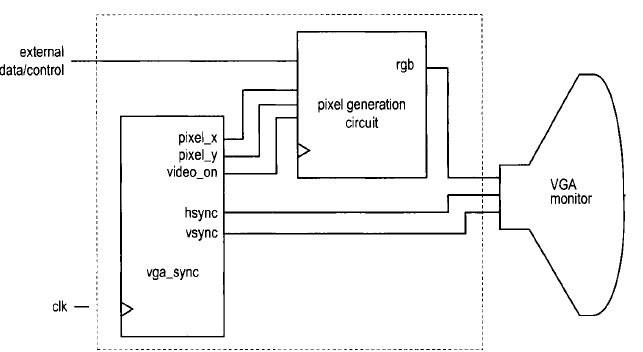
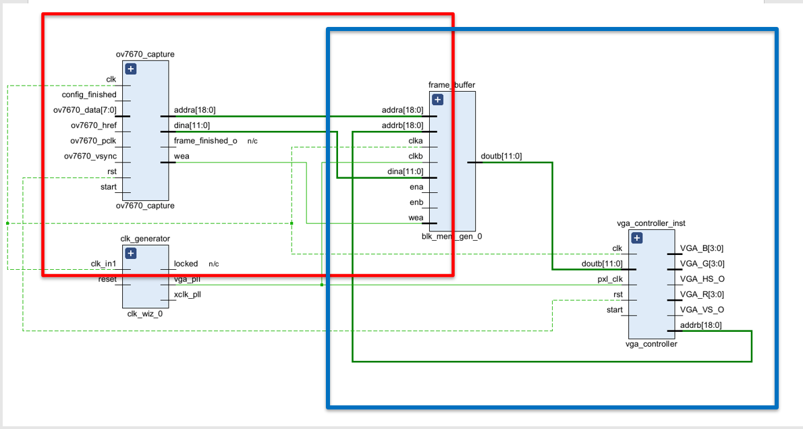
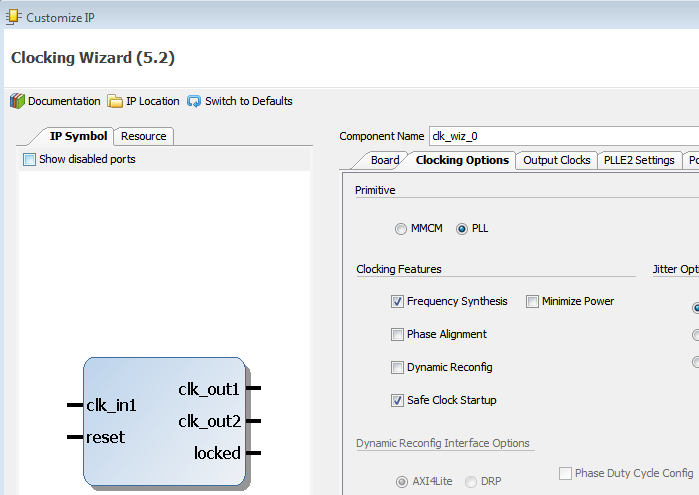
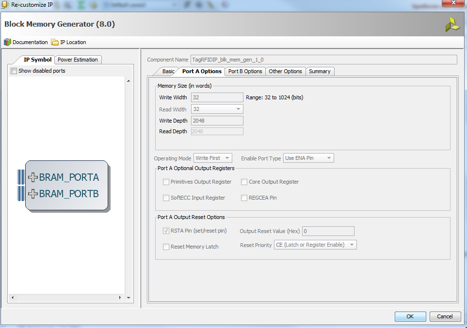
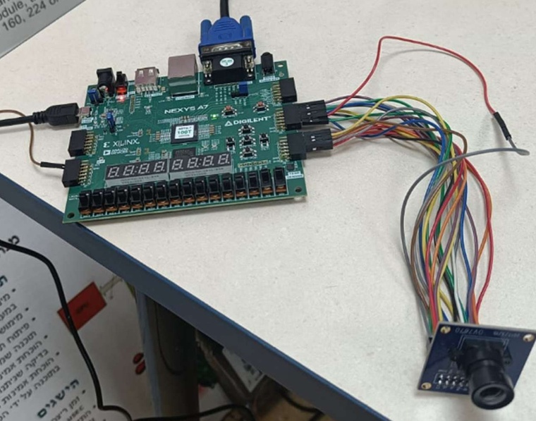
Y * 640 + X.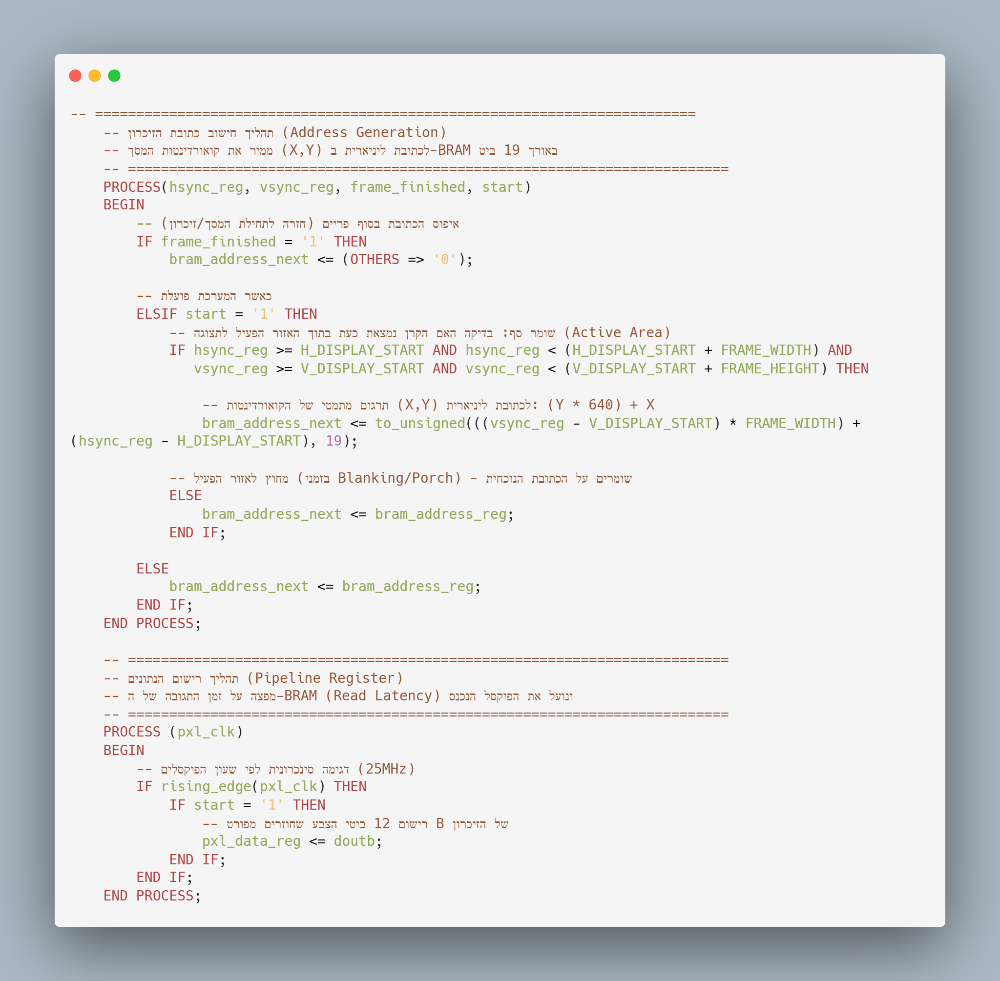
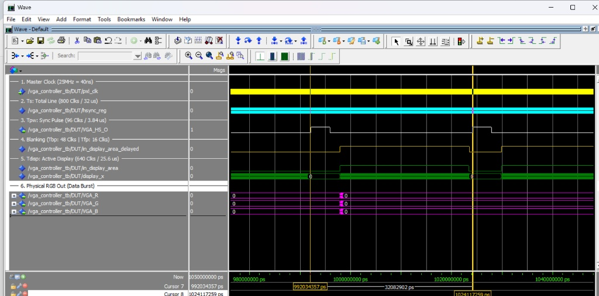
in_display_area דולק בדיוק למשך 25.6µs. ניתן לראות שבזמן זה, ורק בזמן זה, יציאות ה-RGB פולטות נתוני צבע.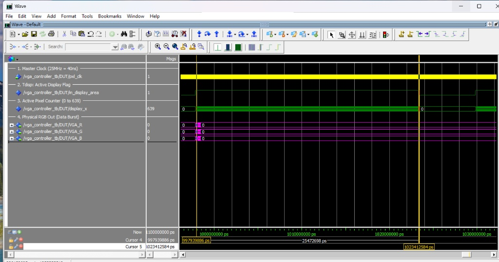
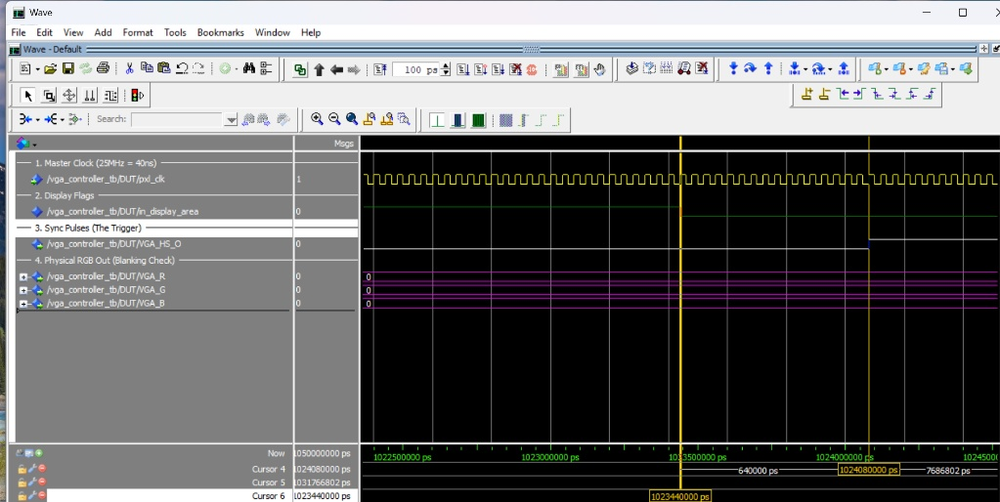
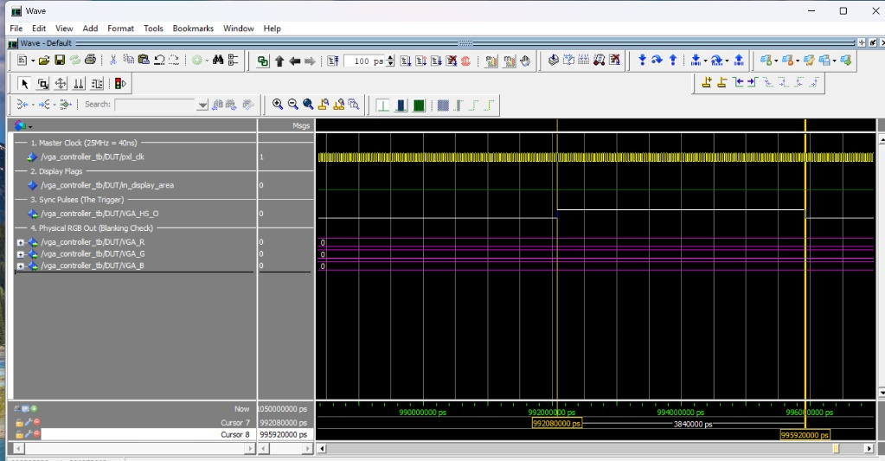
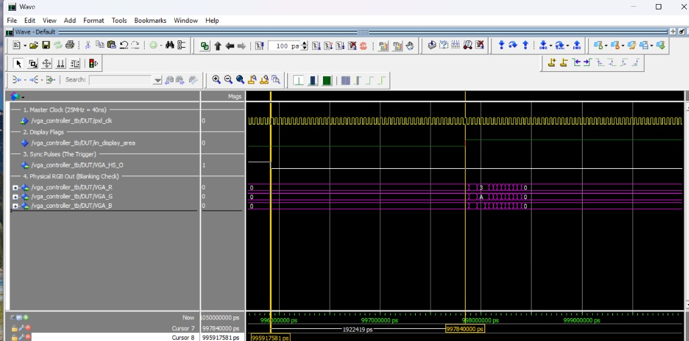
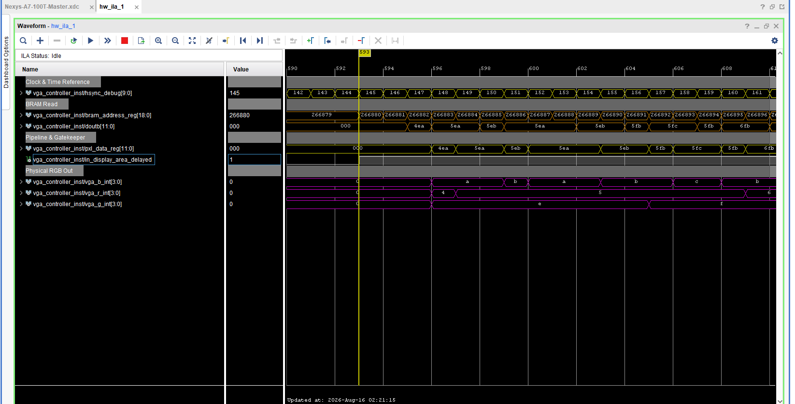
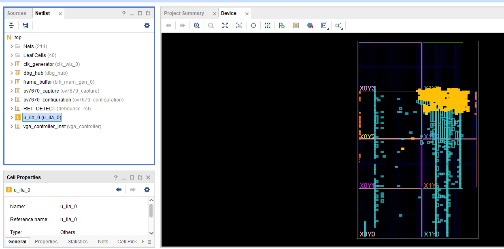
| Module | LUTs | Registers | BRAM |
|---|---|---|---|
| VGA Controller | 47 | 52 | 0 |
| ILA + Debug Hub | 1,732 | 2,642 | 1.5 |
| Total Design | 2,756 | 2,890 | 105 |
| האות ב-Data Path | ModelSim (וירטואלי) | Vivado ILA (הסיליקון) |
|---|---|---|
| bram_address_reg | עדכון מתמטי באפס זמן. | ניתוב פיזי ל-19 חוטים המפעילים את הזיכרון. |
| doutb | המידע מופיע מיידית ובקסם. | חשיפת זמן התגובה האמיתי של החומרה. |
| pxl_data_reg | השמת משתנה פשוטה. | הפליפ-פלופים דוגמים כראוי למרות ההשהיה. |
| in_display_area_dly | דגל בוליאני. | פיקוד פיזי שכופה ניתוב על המרבבים. |
| vga_r/g/b_int | מחרוזות תווים. | חיווט פינים לאדמה למניעת זליגות צבע. |